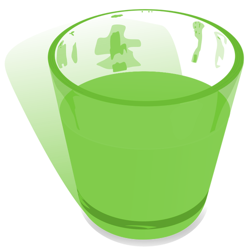

| Draque | |
|  | |
| Type: | Drank (niet-alcoholisch) |
Draque
Draque is een gifgroene niet-alcoholische drank die geen enkele vorm van smaak heeft, maar de drinker het gevoel geeft alsof zijn of haar lichaam geheel in brand staat. Dit effect kan onmiddelijk worden geneutraliseerd door een glas water te drinken waarin suiker is opgelost.
De drank is uitgevonden door Yuleria, maar haar versie was levensgevaarlijk en hoewel Yuleria echt geen opgever is, was ze wel van mening dat ze belangrijkere dingen te doen had dan Draque te perfectioneren. De Drakenhoeders slaagde er echter in de fout in het recept van Yuleria te vinden en een veilige variant van de drank te maken.
De productie van Draque wordt "brouwen" genoemd, net als bij bier, hoewel de receptuur van Draque totaal niet met die van bier te vergelijken is. Vervoer gebeurt net als bij bier en wijn in houten vaten.
Inspiratie
- Het idee dat de drank je het idee geeft dat je lijf in de fik staat is geïnspireerd op de drank "Dragon's Breath" uit de game Quest For Glory (van Sierra), hoewel de drank in die game je wel ter plekke levend verbrand. Draque is in tegenstelling tot Dragon's Breath dus niet dodelijk.
- De neutraliserende werking van suikerwater is geïnspireerd op het gegeven dat als je iets te heet gegeten hebt (in de zin van te hete specerijen) je dit het beste door een schep suiker in je mond te gooien kunt "blussen".
- Draque maakte zijn debuut in het verhaal Weniaria, waarin het een drankje was dat bij velen niet bekend was. Toen ik een op Phantasar gebaseerde AD&D campagne leidde vonden mijn spelers Draque zo leuk dat de drank meedere keren in de campagne opdook en eigenlijk zag ik ook wel goede mogelijkheden in de boeken voor Draque, waardoor Draque prominenter is geworden in de saga.
- Volgens Yuleria drinken echte Draque-drinkers het spul zonder met suikerwater te neutraliseren. Mijn inspiratie daarvoor komt van een anekdote dat mensen bij mij chili con krater kwamen eten. Ja, krater... mijn chili is heet (ik durf het vanwege de bonen niet meer te eten, daar mijn darmen niet meer zijn wat ze geweest zijn). Mijn chili is zeer heet. Daarom vraag ik altijd maar of mensen chili-heet of chili-mild willen. Iedereen dacht "heet" aan te kunnen. De karaf met water op tafel was echter sneller leeg dan de borden, want velen haden onderschat hoe heet mijn chili was. Een van mijn gasten heeft het water echter niet aangeraakt en noemde de andere daarom ook "mietjes". Deze anekdote zorgde er dus voor dat ik Yuleria die mening gaf.
Last updated on Saturday, May 25, 2024; 1:33:15 AM by Jeroen
Index